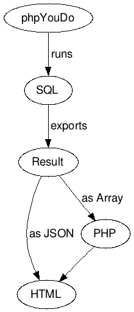
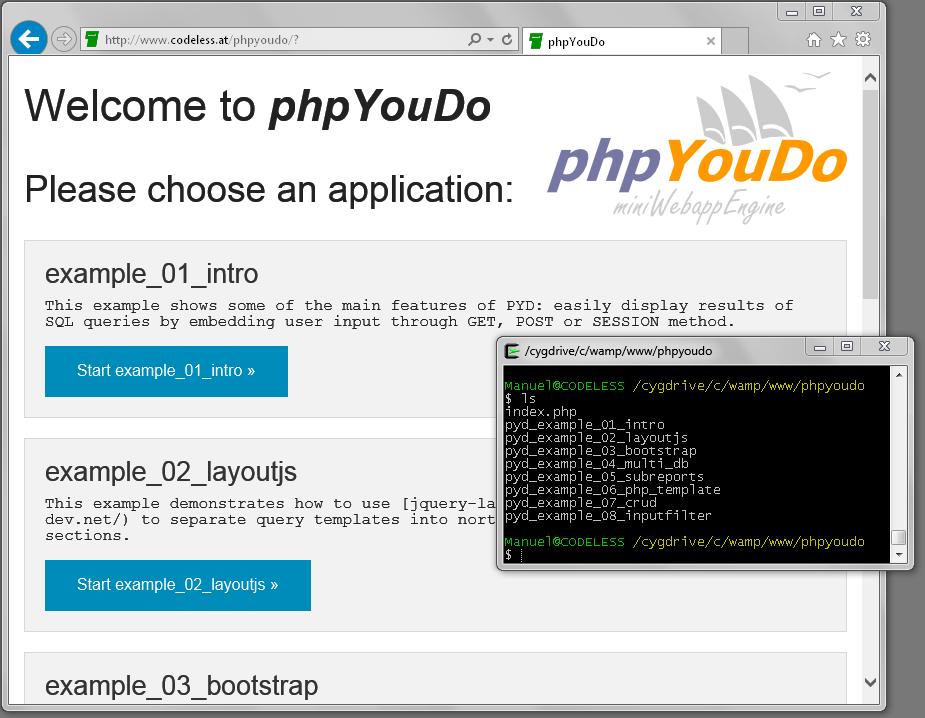
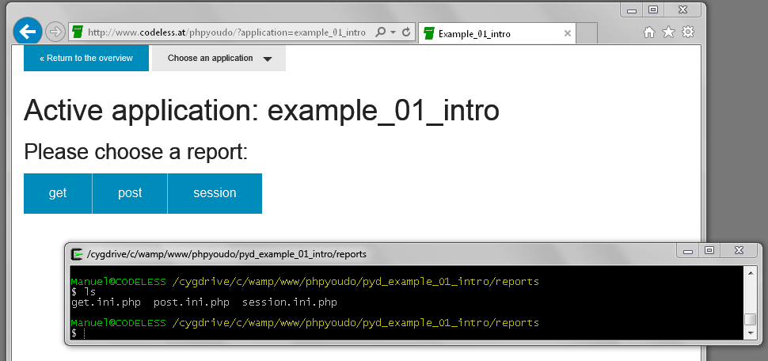
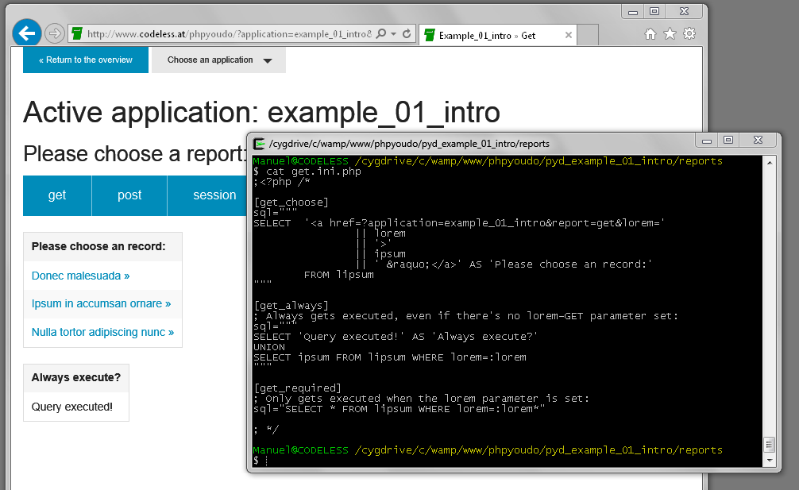
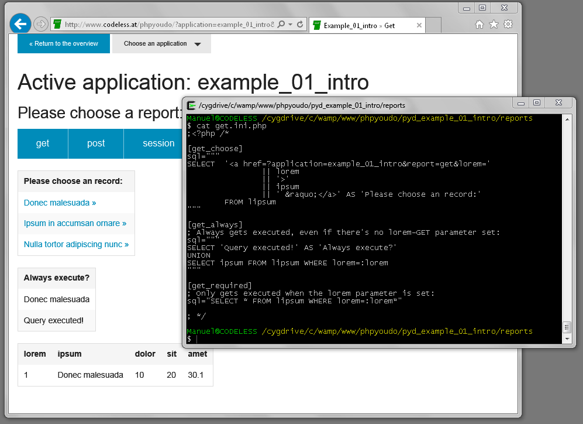

Goal 1: Faster development
Why?
- Less time = less code = less maintenance
- Other projects in the pipeline
How?
phpYouDo has integrated default templates.
Goal 2: Separation of PHP and SQL
Why?
- Gain readability
- Outsource work more easily:
Not every programmer is good at SQL and not every database developer is good at PHP
How?
Queries are stored extra.
----------------------------------------+--------------------------------------
PHP: | and with phpYouDo:
----------------------------------------+--------------------------------------
$delete = isset($_GET['delete']) | [delete_recipe]
? 1 : 0; | ; Only gets executed when both
if ($delete) { | ; the recipe_id and delete are set:
$id = filter_input( | sql="""
INPUT_GET, | DELETE FROM recipes
'recipe_id', | WHERE id=:recipe_id* AND
FILTER_VALIDATE_INT); | :delete*
| """
run_query('DELETE FROM |
recipes WHERE id='. | [list_recipes]
$id); | sql="""
} | SELECT id,
| name
# List recipes | FROM recipes
$recipes = get_rows('SELECT id, | ORDER BY 2
name FROM recipes | LIMIT 40
ORDER BY 2 | """
LIMIT 40'); |
output_somehow($recipes); |
----------------------------------------+--------------------------------------
Goal 3: Server relievement
Why?
- Achieve better performance
- Handle more users
How?
Server runs queries and exports results to client. Client is responsible for rendering templates and charts.

Use phpYouDo when ...
- the focus of your application is on the database
- you plan to integrate multiple developers with different skills (PHP Dev, Database Dev, Design Dev)
- your fellow developers are PHP beginners but Database professionals
- your business logic is in the database
- you need an administrative gui — quick!
- you want no "coded application", but a transparent one
phpYouDo Glossary
Application
A set of reports
Report
A set of queries
Query
An SQL statement




What sort of applications were already done with phpYouDo?
- HTML-Generator for Newsletter-Software, accessing multiple databases
- Analysis tool for smartmeters, with authentication and charts
- Article administration tool for multiple individual webshops
- Tiny Webshop
- ... and other similar tools
Future
- Additional default templates for standard cases; i.e. for messages (delete failed/succeeded, ...)
- Support for transactions
- Support for testing applications
- Caching
- Diverse other performance optimizations